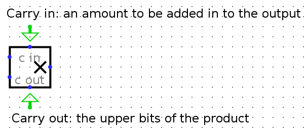

Lab 6: Regfile and ALU
Due:
The previous lab has helped you gain familiarity with Logisim. In this lab, you will be implementing the ALU and Regfile in Logisim.
Setup
Clone the Lab 6 repository by clicking on the Github classroom invitation link
Warning: Save often with Logism
Logisim does not have autosave, i.e. it does not save your work as you go along. Save when you start, and save frequently as you work.Exercise 1: Arithmetic Logic Unit (ALU)
Your first task is to create an ALU that supports all the operations needed by the instructions in our ISA (which is described in further detail in the next section). Please note that we treat overflow as RISC-V does with unsigned instructions, meaning that we ignore overflow.
We have provided a skeleton of an ALU for you in alu.circ. It has three inputs:
| Input Name | Bit Width | Description |
|---|---|---|
| A | 32 | Data to use for Input A in the ALU operation. |
| B | 32 | Data to use for Input B in the ALU operation. |
| ALUSel | 4 | Selects what operation the ALU should perform (see the list of operations with corresponding switch values below). |
... and one output:
| Output Name | Bit Width | Description |
|---|---|---|
| Result | 32 | Result of the ALU Operation. |
Below is the list of ALU operations for you to implement, along with their associated ALUSel values. All of them are required with the exception of mulh, which is a bonus exercise. You are allowed and encouraged to use built-in Logisim blocks to implement the arithmetic operations.
| Switch Value | Instruction |
|---|---|
| 0 | add: Result = A + B |
| 1 | and: Result = A & B |
| 2 | or: Result = A | B |
| 3 | xor: Result = A^B |
| 4 | srl: Result = (unsigned) A >> B |
| 5 | sra: Result = (signed) A >> B |
| 6 | sll: Result = A << B |
| 7 | slt: Result = (A < B) ? 1 : 0 Signed |
| 8 | divu: Result = (unsigned) A / B |
| 9 | remu: Result = (unsigned) A % B |
| 10 | mult: Result = (signed) A*B[31:0] |
| 11 | mulhu: Result = A*B[63:32] |
| 12 | sub : Result = A - B |
| 13 | bsel: Result = B |
| 14 | mulh: Result = (signed) A*B[63:32] |
When implementing mul (or mulh for the bonus exercise), notice that the multiply block has a "Carry Out" output (the adder block also has this, but you will not need this) located here:
Experiment with it, and see what you get for both the result and carryout with negative and positive 2's complement numbers. You should realize why we made mulh extra credit.
Hints:- Add is already made for you, and feel free to use a similar structure when implementing your other blocks.
- You can hover your cursor over an output/input on a block to get more detailed information about that input/output.
- You might find bit splitters or extenders useful when implementing sra and srl.
- Use tunnels! They will make your wiring cleaner and easier to follow, and will reduce your chances of encountering unexpected errors.
- A multiplexer (MUX) might be useful when deciding which block output you want to ouput. In other words, consider simply processing the input in all blocks, and then outputing the one of your choice.
NOTE: Your ALU must be able to fit in the provided harness alu_harness.circ.
Follow the same instructions as the register file regarding rearranging inputs and outputs of the ALU. In particular, you should ensure that your ALU is correctly loaded by a fresh copy of alu_harness.circ before you submit.
Testing
When you run ./test.sh, the ALU tests will produce output in the tests/student_output directory. We've provided a python script called binary_to_hex_alu.py that can interpret this output in a readable format for you. To use it, do the following:
$ cd tests $ python binary_to_hex_alu.py PATH_TO_OUT_FILE
For example, to see reference_output/alu-add-ref.out in readable format, you would do this:
$ cd tests $ python binary_to_hex_alu.py reference_output/alu-add-ref.out
If you want to see the difference between your output and the reference solution, put the readable outputs into new .out files and diff them. For example, for the alu-add test, take the following steps:
$ cd tests $ python binary_to_hex_alu.py reference_output/alu-add-ref.out > alu-add-ref.out $ python binary_to_hex_alu.py student_output/alu-add-student.out > alu-add-student.out $ diff alu-add-ref.out alu-add-student.out
Exercise 2: Register File (RegFile)
RISC-V architecture has 32 registers. However, in this lab, You will only implement 9 of them (specified below) to save you some repetitive work. This means your rs1, rs2, and rd signals will still be 5-bit, but we will only test you on the specified registers.
Your RegFile should be able to write to or read from these registers specified in a given RISC-V instruction without affecting any other registers. There is one notable exception: your RegFile should NOT write to x0, even if an instruction try. Remember that the zero register should ALWAYS have the value 0x0. You should always connect the clock signal directly to the clock input of the registers without passing through ANY combinational logic.
The registers and their corresponding numbers are listed below.
| Register # | Register Name |
|---|---|
| x0 | zero |
| x1 | ra |
| x2 | sp |
| x5 | t0 |
| x6 | t1 |
| x7 | t2 |
| x8 | s0 |
| x9 | s1 |
| x10 | a0 |
You are provided with the skeleton of a register file in regfile.circ. The register file circuit has six inputs:
| Input Name | Bit Width | Description |
|---|---|---|
| Clock | 1 | Input providing the clock. This signal can be sent into subcircuits or attached directly to the clock inputs of memory units in Logisim, but should not otherwise be gated (i.e., do not invert it, do not "and" it with anything, etc.). |
| RegWEn | 1 | Determines whether data is written to the register file on the next rising edge of the clock. |
| Read Register 1 (rs1) | 5 | Determines which register's value is sent to the Read Data 1 output, see below. |
| Read Register 2 (rs2) | 5 | Determines which register's value is sent to the Read Data 2 output, see below. |
| Write Register (rd) | 5 | Determines which register to set to the value of Write Data on the next rising edge of the clock, assuming that RegWEn is a 1. |
| Write Data | 32 | Determines what data to write to the register identified by the Write Register input on the next rising edge of the clock, assuming that RegWEn is 1. |
The register file also has the following outputs:
| Output Name | Bit Width | Description |
|---|---|---|
| Read Data 1 | 32 | Driven with the value of the register identified by the Read Register 1 input. |
| Read Data 2 | 32 | Driven with the value of the register identified by the Read Register 2 input. |
| ra Value | 32 | Always driven with the value of ra (This is a DEBUG/TEST output.) |
| sp Value | 32 | Always driven with the value of sp (This is a DEBUG/TEST output.) |
| t0 Value | 32 | Always driven with the value of t0 (This is a DEBUG/TEST output.) |
| t1 Value | 32 | Always driven with the value of t1 (This is a DEBUG/TEST output.) |
| t2 Value | 32 | Always driven with the value of t2 (This is a DEBUG/TEST output.) |
| s0 Value | 32 | Always driven with the value of s0 (This is a DEBUG/TEST output.) |
| s1 Value | 32 | Always driven with the value of s1 (This is a DEBUG/TEST output.) |
| a0 Value | 32 | Always driven with the value of a0 (This is a DEBUG/TEST output.) |
The DEBUG/TEST outputs are present for testing and debugging purposes. If you were implementing a real register file, you would omit those outputs. In our case, be sure they are included correctly--if they are not, you will not pass.
You can make any modifications to regfile.circ you want, but the outputs must obey the behavior specified above. In addition, your regfile.circ that you submit must fit into the regfile_harness.circ file we have provided for you. This means that you should take care not to move inputs or outputs. To verify changes you have made didn't break anything, you can open regfile_harness.circ and ensure there are no errors and that the circuit functions well. (The tests use a slightly modified copy of regfile_harness.circ.)
Hints:
- Take advantage of copy-paste! It might be a good idea to make one register completely and use it as a template for the others to avoid repetitive work.
- Because of the naming conventions that Logisim Evolution requires, because the outputs are named ra, sp, etc., you will not be able to name your registers ra, sp, etc. We suggest that you instead name them with numerical name of the register, e.g. x1, x2.
- You should not use the ``enable input'' on your MUXes. In fact, you can turn that feature off. I would also advise you to also turn ``three-state'' to off. Take a look at all the inputs to a Logisim register and see what they all do.
- Again, MUXes are your friend, but also DeMUXes.
- Think about what happens in the register file after a single instruction is executed. Which values change? Which values stay the same? Registers are clock-triggered--what does that mean?
- Keep in mind registers have an "enable" input available, as well as a clock input.
- What is the value of x0?
Testing
When you run ./test.sh, the RegFile tests will produce output in the tests/student_output directory. We've provided a python script called binary_to_hex_regfile.py that can interpret this output in a readable format for you.
cd tests python binary_to_hex_regfile.py PATH_TO_OUT_FILE
For example, to see reference_output/regfile-x0-ref.out in readable format, you would do this:
$ cd tests $ python binary_to_hex_regfile.py reference_output/regfile-x0-ref.out
If you want to see the difference between your output and the reference solution, put the readable outputs into new .out files and diff them. For example, for the regfile-x0 test, take the following steps:
$ cd tests $ python binary_to_hex_regfile.py reference_output/regfile-x0-ref.out > regfile-x0-ref.out $ python binary_to_hex_regfile.py student_output/regfile-x0-student.out > regfile-x0-student.out $ diff regfile-x0-ref.out regfile-x0-student.out
Handin Procedure
To handin your files, simply commit and push them to github.com$ git commit -am "Finish lab5" $ git push origin masterWe will fetching your lab files from Github.com at the specified deadline and grade them.